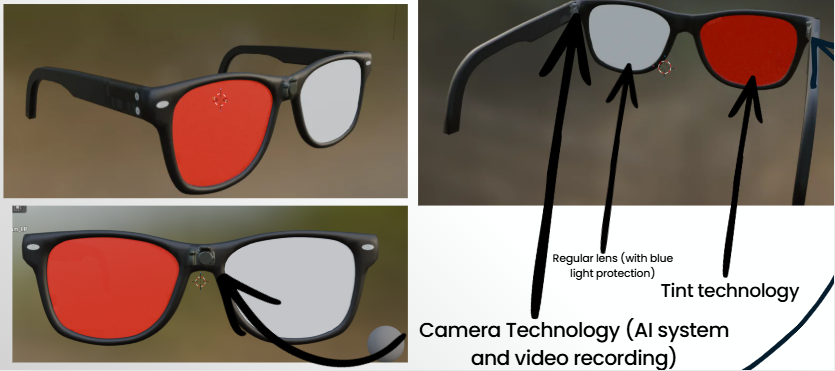

Neuroshade uses poor posture detection, eye-tracking, and smart tinting to help students, office workers, gamers, and long-hour screen users stay focused and reduce strain on back and neck from bad posture.

Neuroshade is designed to detect signs of poor posture and focus fatigue, then respond with smart tinting to help users reset their attention before bad posture, pressure on neck, and reduced attention on work form.
Students and workers spend hours staring at screens, most of the time with poor posture and constant distractions. Neuroshade targets both physical strain and focus loss within this target group.
of office workers experience work-related musculoskeletal disorders.
of university students show signs of forward head posture due to prolonged smartphone and screen use.
of force can be placed on the neck from a 60-degree head tilt.
Neuroshade is a premium wearable technology product for students, professionals, gamers, programmers, and long-hour screen users.
$349 CAD
Estimated production cost: $140 CAD
Estimated profit per unit: $209 CAD